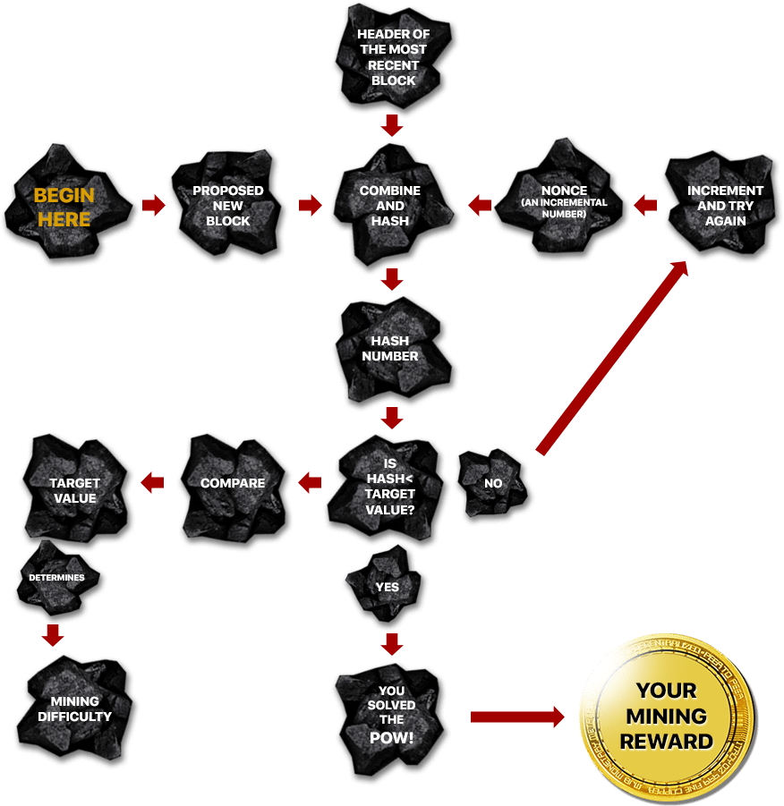

Where do bitcoins come from? With paper money, a government
decides when to print and distribute money. Bitcoin doesn't have
a central government.
With Bitcoin, miners use special software to solve math problems
and are issued a certain number of bitcoins in exchange. This
provides a smart way to issue the currency and also creates an
incentive for more people to mine.
Bitcoin miners help keep the Bitcoin network secure by approving transactions.
Mining is an important and integral part of Bitcoin that ensures fairness while
keeping the Bitcoin network stable, safe and secure.
Currently, based on (1) price per hash and (2) electrical efficiency the best Bitcoin miner options are:
Bitcoin mining is the process of adding transaction records to Bitcoin's public
ledger of past transactions or blockchain. This ledger of past transactions is
called the block chain as it is a chain of blocks. The block chain serves to confirm
transactions to the rest of the network as having taken place.
Bitcoin nodes use the block chain to distinguish legitimate Bitcoin transactions
from attempts to re-spend coins that have already been spent elsewhere.
confirms transactions in a trustfull
manner when enough computational
power (effort) is devoted to block
creates (issues)
new bitcoin
in each block
WHAT IS
PROOF OF WORK?
it costs processing
power which can be
translated to:
It is easy on the other hand for others to check if the requirements were met
IN PRACTICE:
What is
mining difficulty?
it’s a measure of how difficult is
to find a hash below the target
value (a 256-bit number) during
the proof of work
Bitcoin mining is the process of adding transaction records to Bitcoin's public ledger of past transactions or blockchain. This ledger of past transactions is called the block chain as it is a chain of blocks. The block chain serves to confirm transactions to the rest of the network as having taken place.
Bitcoin mining is the process of adding transaction records to Bitcoin's public ledger of past transactions or blockchain. This ledger of past transactions is called the block chain as it is a chain of blocks. The block chain serves to confirm transactions to the rest of the network as having taken place. Bitcoin mining is the process of adding transaction records to Bitcoin's public ledger of past transactions or blockchain. This ledger of past transactions is called the block chain as it is a chain of blocks. The block chain serves to confirm transactions to the rest of the network as having taken place.
What is
Bitcoin
CLOUDMining?
Bitcoin mining is the process of adding transaction records to Bitcoin's public ledger of past transactions or blockchain. Bitcoin mining is the process of adding transaction records to Bitcoin's public ledger of past transactions or blockchain. Bitcoin mining is the process of adding transaction records to Bitcoin's public ledger of past transactions or blockchain.
Bitcoin mining is intentionally designed to be resource-intensive and difficult so that the number of blocks found each day by miners remains steady. Individual blocks must contain a proof of work to be considered valid. This proof of work is verified by other Bitcoin nodes each time they receive a block. Bitcoin uses the hashcash proof-of-work function.
The primary purpose of mining is to allow Bitcoin nodes to reach a secure, tamper-resistant consensus. Mining is also the mechanism used to introduce Bitcoins into the system: Miners are paid any transaction fees as well as a "subsidy" of newly created coins.
This both serves the purpose of disseminating new coins in a decentralized manner as well as motivating people to provide security for the system.
Bitcoin mining is so called because it resembles the mining of other commodities: it requires exertion and it slowly makes new currency available at a rate that resembles the rate at which commodities like gold are mined from the ground.
What is Proof of Work?A proof of work is a piece of data which was difficult (costly, time-consuming) to produce so as to satisfy certain requirements. It must be trivial to check whether data satisfies said requirements.
Producing a proof of work can be a random process with low probability, so that a lot of trial and error is required on average before a valid proof of work is generated. Bitcoin uses the Hashcash proof of work.
What is Bitcoin Mining Difficulty?The Computationally-Difficult Problem
Bitcoin mining a block is difficult because the SHA-256 hash of a block's header must be lower than or equal to the target in order for the block to be accepted by the network.
This problem can be simplified for explanation purposes: The hash of a block must start with a certain number of zeros. The probability of calculating a hash that starts with many zeros is very low, therefore many attempts must be made. In order to generate a new hash each round, a nonce is incremented. See Proof of work for more information.
The Bitcoin Network Difficulty Metric
The Bitcoin mining network difficulty is the measure of how difficult it is to find a new block compared to the easiest it can ever be. It is recalculated every 2016 blocks to a value such that the previous 2016 blocks would have been generated in exactly two weeks had everyone been mining at this difficulty. This will yield, on average, one block every ten minutes.
As more miners join, the rate of block creation will go up. As the rate of block generation goes up, the difficulty rises to compensate which will push the rate of block creation back down. Any blocks released by malicious miners that do not meet the required difficulty target will simply be rejected by everyone on the network and thus will be worthless.
The Block Reward
When a block is discovered, the discoverer may award themselves a certain number of bitcoins, which is agreed-upon by everyone in the network. Currently this bounty is 25 bitcoins; this value will halve every 210,000 blocks. See Controlled Currency Supply.
Additionally, the miner is awarded the fees paid by users sending transactions. The fee is an incentive for the miner to include the transaction in their block. In the future, as the number of new bitcoins miners are allowed to create in each block dwindles, the fees will make up a much more important percentage of mining income.